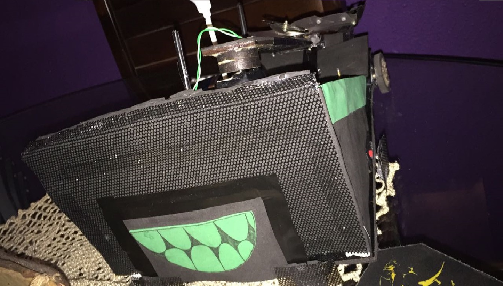

A ROBOCUP
Trata-se de uma competição entre os primeiro-anistas dos cursos de Sistemas de Informação da Faculdade de Informática e Administração Paulista.
O objetivo do torneio é bem simples: O robô que estourar a bexiga fixa no adversário vence. Seguem algumas regras gerais:
1)Os Robôs devem ter no máximo 20 cm de altura, 30cm de largura e 30cm de comprimento
2)A bexiga deve ser fixada no centro do robô, a exatos 20 cm de altura do chão
3)A arma só poderá ser acionada por um dos sensores de toque, deve funcionar por 15 segundos e retornar para o perímetro do Robô
